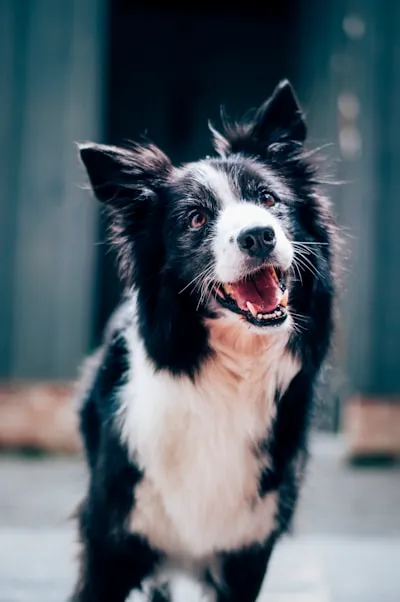

Day 1
Day 1
 Today
Today
The Resilient Senior
Barnaby's Unstoppable Spirit
Found abandoned in an industrial district, Barnaby was a shadow of a dog. Today, he manages a 20-acre ranch as a therapy companion for local seniors.
Complete Narrative
Rescue Home
Home
Transformation Journey
Finding Home: The Story of Bella
From a timid stray found in a parking lot to a confident companion, Bella's journey is proof of the power of patience and a warm bed.
Explore Highlights
Overcoming Odds
A New Chapter for Duke
Duke survived three months on the streets before finding his match. He now spends his days protecting his new family's backyard garden.
Full Story
Feline Freedom
The Social Rise of Luna
Luna arrived at the shelter completely shut down. Through our socialization program, she's now the most affectionate cat in her new home.
Her Progress